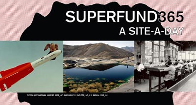
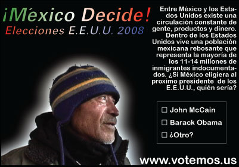

|
| |
OCTOBERThursday, October 16 | |
| 
Brooke Singer, Superfund 365, website. | Brooke Singer likes to work with emerging technologies not only because they are fun but also because they are malleable. She is cofounder of the art, technology and activist group, Preemptive Media, and currently Assistant Professor of New Media at Purchase College, State University of New York. She exhibits and lectures internationally, including at The Andy Warhol Museum; The Whitney Museum of American Art; and La Biennale de Montréal. With her collective Preemptive Media, Brooke was awarded the first Social Sculpture Commission by Eyebeam Art and Technology Center and the Lower Manhattan Cultural Council in 2005. She has received grants from the New York Foundation for the Arts (NYFA), and Franklin Furnace. Brooke Singer's work explores and blurs the borders between science, technology, politics and arts practice. The form may include a web site, video, installation, performance, toolkit, workshop, lecture or combination of these elements. Her projects generally attempt to make the invisible visible (pollution, surveillance, databases) and turn dusty data into dynamic experiences. She views collaboration as a type of microcosm (or beta-testing) for the larger dialogue she hopes her work provokes. |
| 
Ricardo Miranda Zuniga, VOTEMOS.US iMexico Decide! |
Ricardo Miranda Zuniga is an artist based in Brooklyn and an Associate Professor of Art at The College of New Jersey Ricardo's work has been exhibited internationally. He had recent exhibitions at Laboratorio Arte Alameda in Mexico City; The National Center for Contemporary Art in St. Petersburg, Russia; Ars Electronica in Linz, Austria; and The New Museum of Contemporary Art in New York. Currently he is a New York Foundation for the Arts Fellow and a Tides Foundation Lambent Fellow. VOTEMOS.US questions how the 2008 United States Presidential Election would differ if all residents of the United States could vote. Currently only citizens registered to vote may participate in the election for the next President. However within the borders of the United States reside nearly 40 million non-citizen residents, permanent residents, most legal, some undocumented, but all are active members of the U.S. economy and society. The artist feels that the majority of these residents would eagerly vote if given the opportunity. VOTEMOS.US presents an online Spanish language portal to the US presidential elections that allows users to register, vote and give their opinion on the US elections. Since the start of 2008, VOTEMOS.US has been conducting video interviews with non-citizen residents to ask their opinion on the elections, the changes that they would like to see with a new president and who they would vote for if they could vote. |